Project 5 / Face Detection with a Sliding Window
Part - 1: Extracting positive and negative HOG feature training data
Extracting the positive training data was easy since all the positive training data was already cropped to 36x36 and vl_hog() routine is straightforward.
For extracting the negative training data, I performed the following steps:
- Compute a rough estimate of the number of features to extract from each image. [We know the final number of features we need and the number of images we have to mine from]
- Convert each image to HOG feature space using vl_hog() and the appropriate cell size.
- Randomly crop out boxes of data from the HOG feature space image with the same size as the feature size (6x6x31) and flatten them to obtain the feature vector. Repeat this process until you have desired number of feature vector samples.
Part - 2: Training the SVM classifier
Training the SVM classifier requires two sets of data - the training data, ie the feature vectors extracted above and the training labels (+1 or -1). I created a vector with same size as the number of feature vectors in training data and set the elements corresponding to positive feature vectors as +1 and the rest as -1.
I used a lambda of 0.0001 which gave me good results.
Part - 3: Implementing the detector
I implemented a multi-scale sliding window detector that obtains an average precision ratio of 90.2% with a cell-size of 4 pixels on the test data.
I perform the following steps on each image to obtain potential face detection matches.
- For each scale, I resize original image to a particular lower resolution scale. Once resized, I compute HoG feature space representation of this image and run the SVM classifier on each block of the HoG space image with same dimensions as the (template size/cellsize)^2.
- For each window, the classifier returns a real valued number which is compared against a predefined threshold to obtain potential face containing bounding boxes in HoG space. This HoG space bounding box is then rescaled back to the original image space to compute the actual bounding box.
- The confidence for each bounding box is defined as the (svm output - threshold)
- The scales in each iteration decreseses exponentially until it reaches the template size dimensinos or the maximum number of down-scaling iterations is reached.
- Once I have all the bounding boxes required, I perform non-max suppression on them using the code provided.
Results
Here are some of the results.
| Detector |
Cell size |
Classifier |
Lambda |
Number of negative feature samples |
Threshold |
Average precision ratio |
| Single-scale |
6 pixels |
SVM |
0.0001 |
11026 (10000) |
-0.9 |
30.0% |
| Multi-scale |
6 pixels |
SVM |
0.0001 |
11026 (10000) |
-0.1 |
85.1% |
| Multi-scale |
4 pixels |
SVM |
0.0001 |
11000 (10000) |
-0.1 |
90.7% |
| Multi-scale |
3 pixels |
SVM |
0.0001 |
11156 (10000) |
-0.1 |
92.2% |
NOTE:The number of negative feature samples column shows the data as X (Y) where X is the actual number of negative feature samples used and Y is the num_negative_examples parameter set in the code. The get_random_negative_features.m routine generally computes slightly more number of samples per image since some of them are ignored if the box sliced out from the HoG space is less than the desired template size.
Single Scale
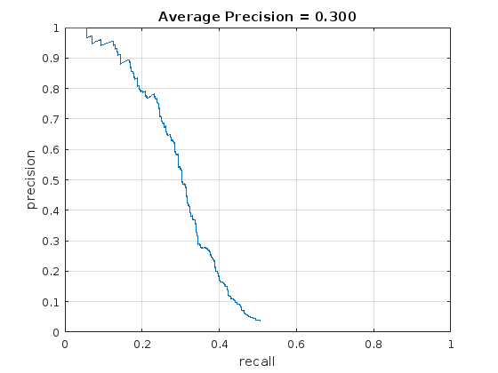 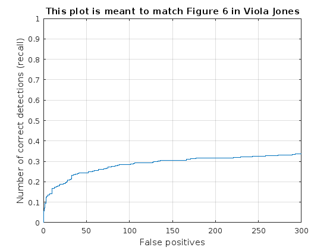
Multi Scale - cell size = 6 pixels
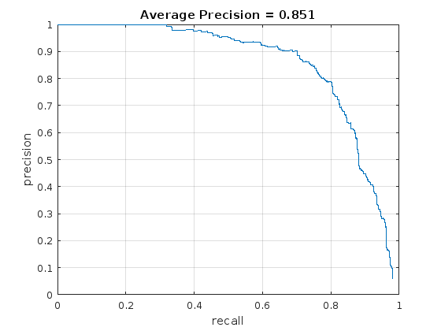 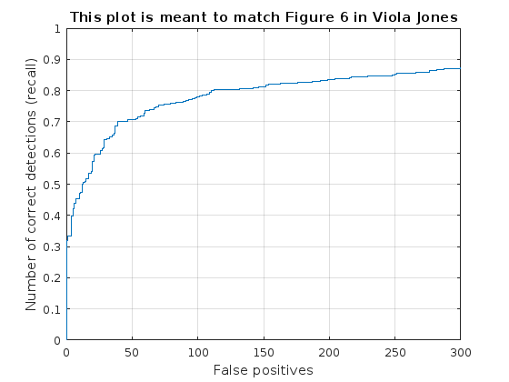
Sample result
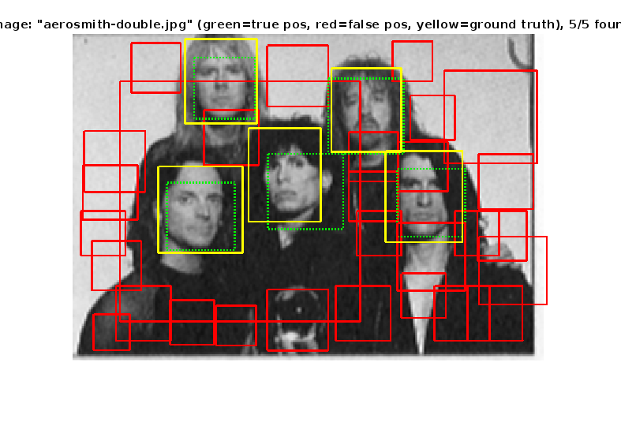
Multi Scale - cell size = 4 pixels
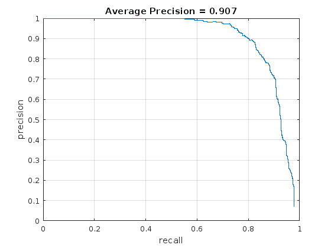 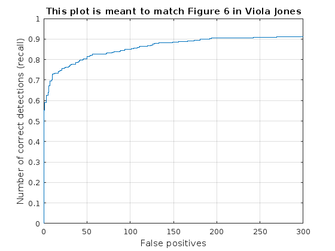
Sample result
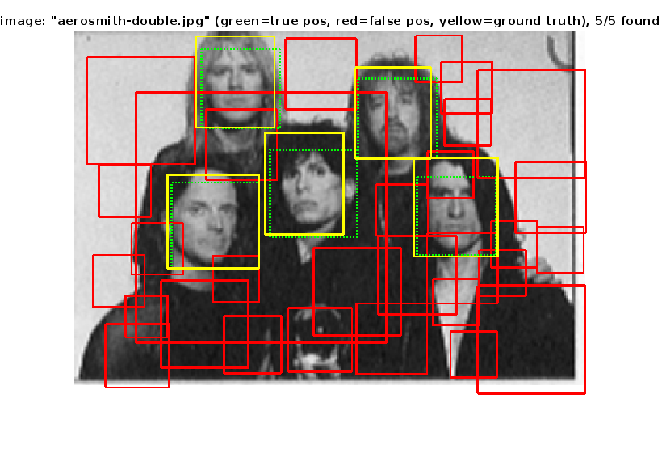
Multi Scale - cell size = 3 pixels
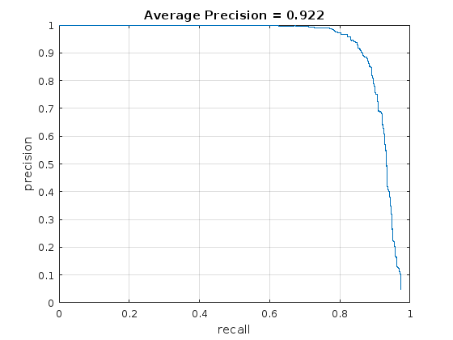 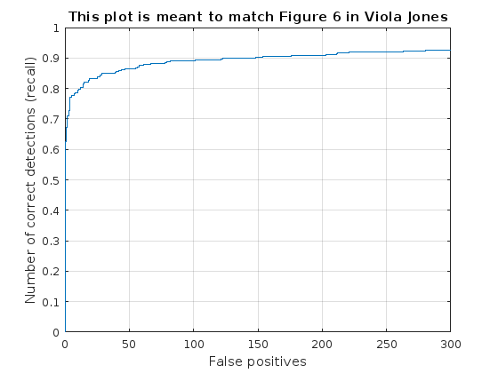
Sample result
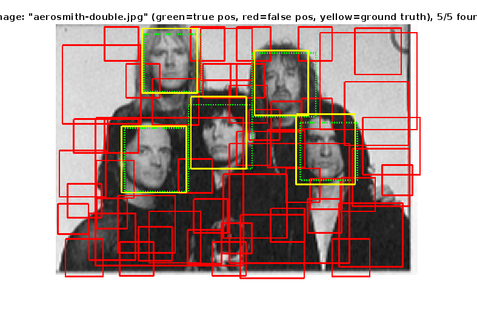
Part - 4/ Graduate Credit: Hard negative mining
I implemented hard negative mining. I ran the original implementation with 10000 negative feature vector samples to train the SVM classifier. Once trained, I modified the detection routine to store the HoG features above a certain threshold in the non-face dataset as the hard negative features dataset. Then I retrained the SVM with the original positive dataset and the new hard negative dataset to obtain a better trained SVM classifier. I ran the detection on the test data with the new classifier.
For equal training data size comparison, I re-ran the original implementation but with a reduced negative training data size (approximately the same number as used in the hard negative iteration).
Here are the parameters used:
- Number of negative HoG feature samples = 1577 [set num_negative_examples=2200]
- Number of hard negative HoG feature samples = 1545 [set negative_threshold=0.1]
- SVM lambda (for both cases) = 0.0001
- Cell size = 6 pixels (for both cases)
I got an average precision of 83.7% with 1577 negative HoG feature samples (without hard negative features).
With hard negative features, it improved to 86.3% which is better than the multi-scale 6px cell-size detector (results shown above) with ~11000 non-hard negative features (85.1%).
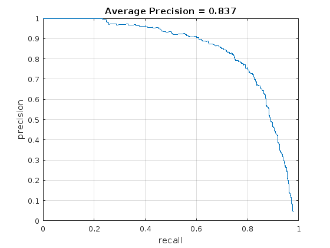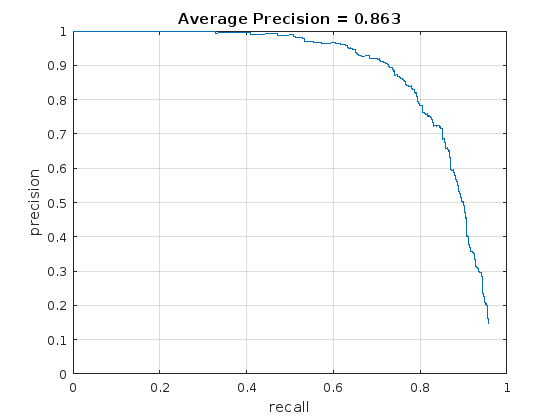
Left:without hard negative, Right:with hard negative
Random tree classifier
I implemented the random tree based classifier as an alternative to SVM classifier. It can be used by setting the tree_classifier_on=1. With leaf size of 1, the results were abysmally bad. One reason is that since the random tree only learns whether the HoG representation is a face or not ({+1, -1} a binary classification), when running the detection pipeline we generally get a large number of bounding boxes corresponding to all the test data feature vectors which give +1. This is also due to overfitting the data since the leaf size is 1.
Results on bonus scene
I ran the detector with 6px cell size and threshold of 0.9 (rest of the paramaters were same as before for non-hard negative detector) on the bonus test scenes. Here are the results:
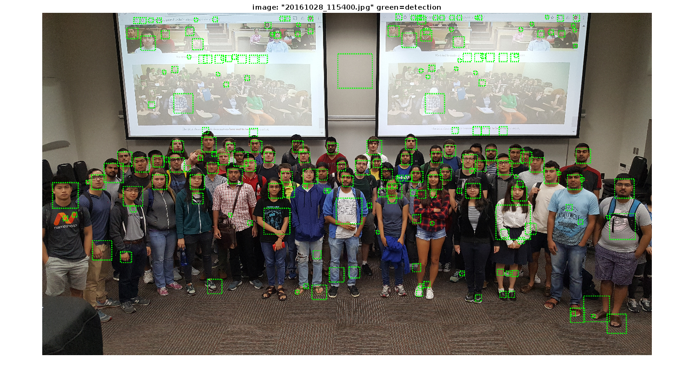
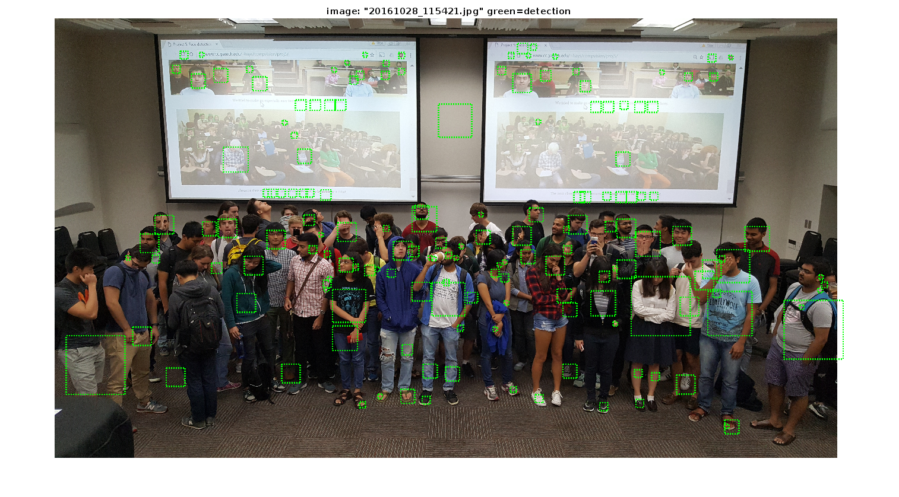
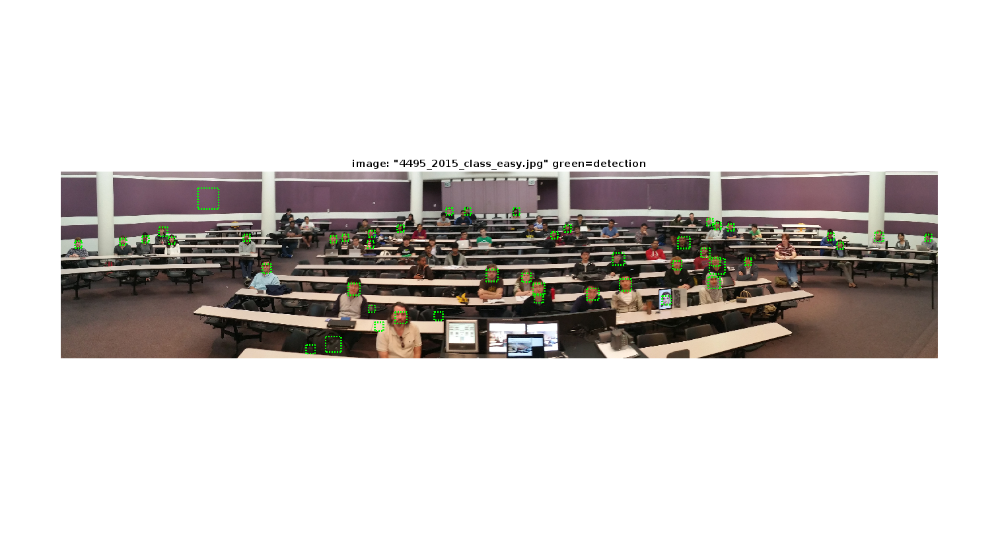
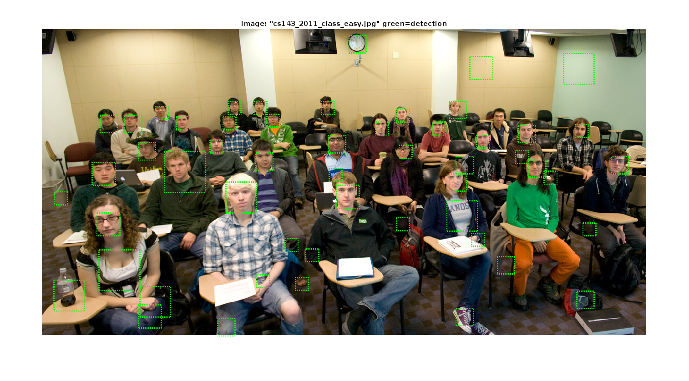
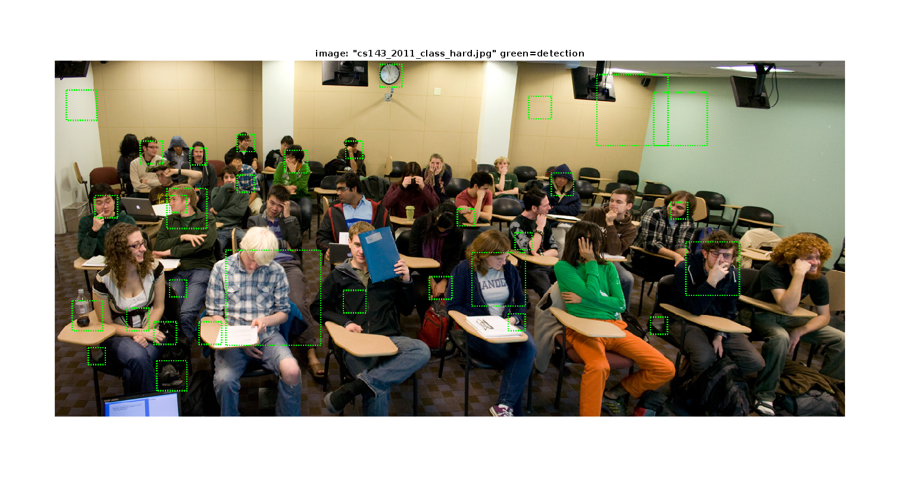
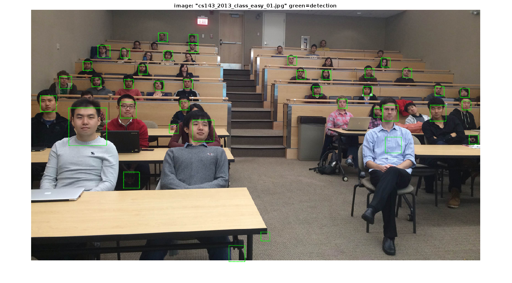
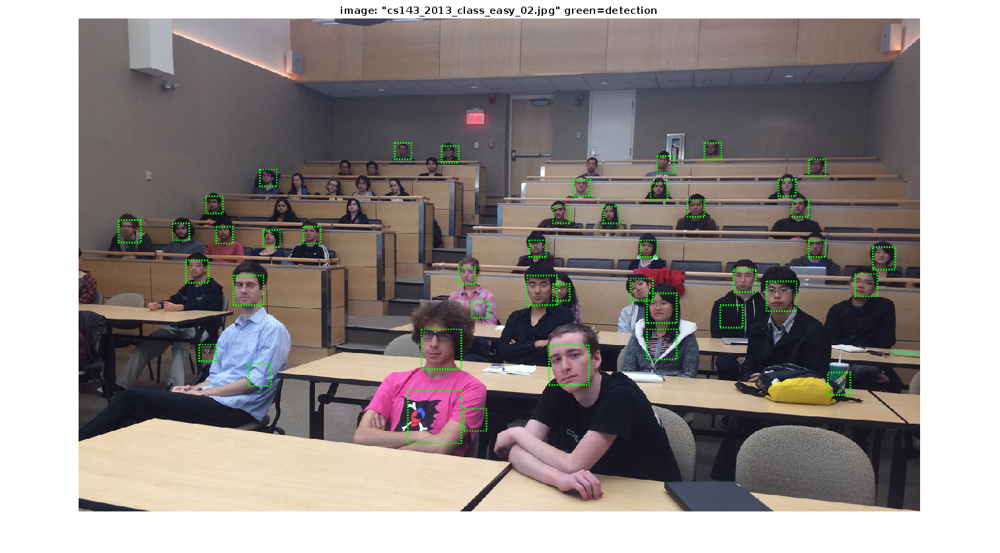
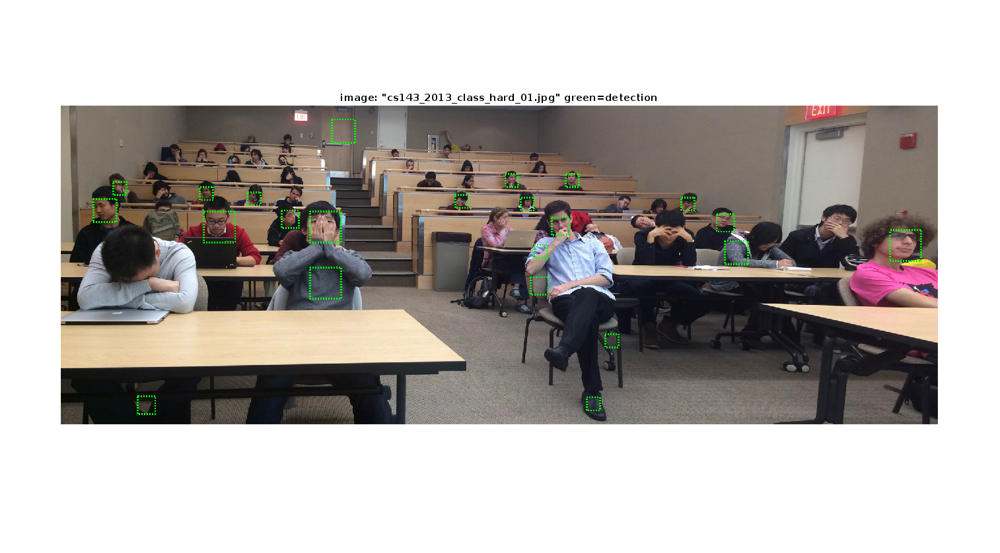
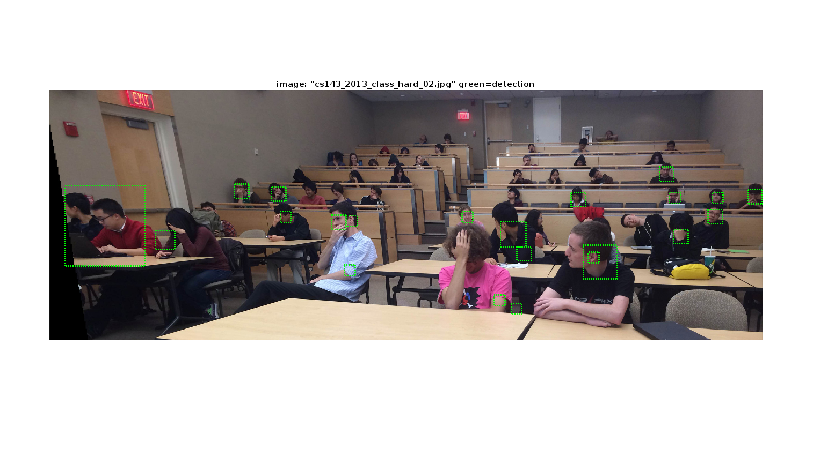
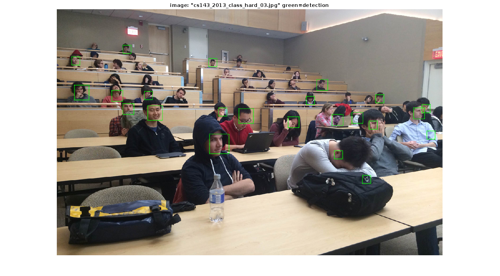